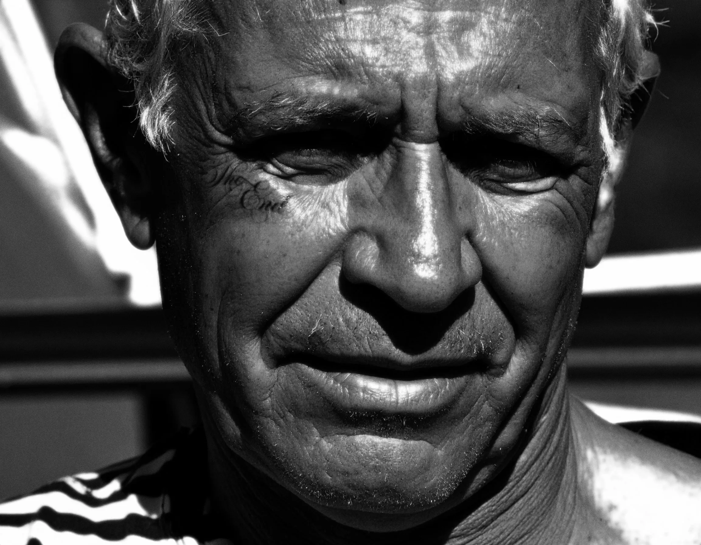
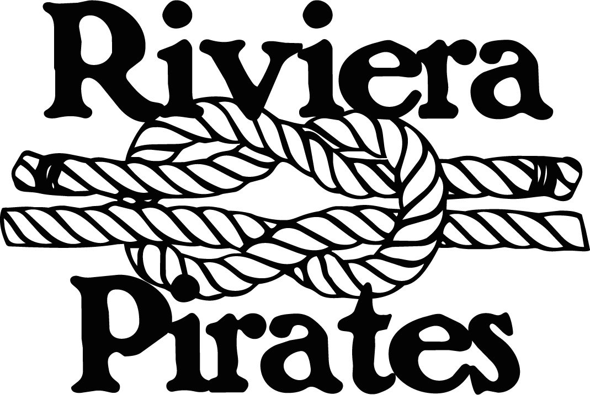
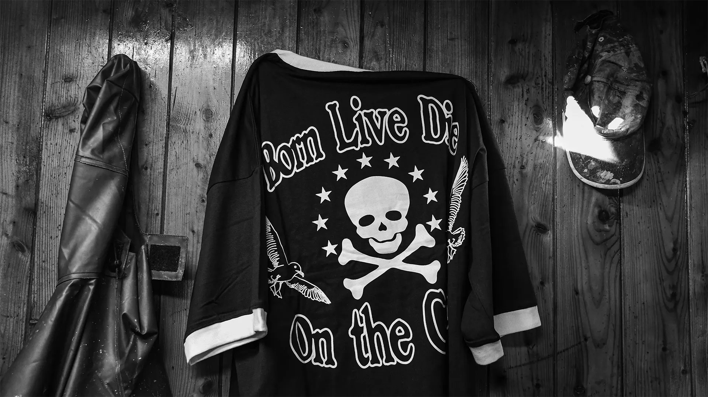
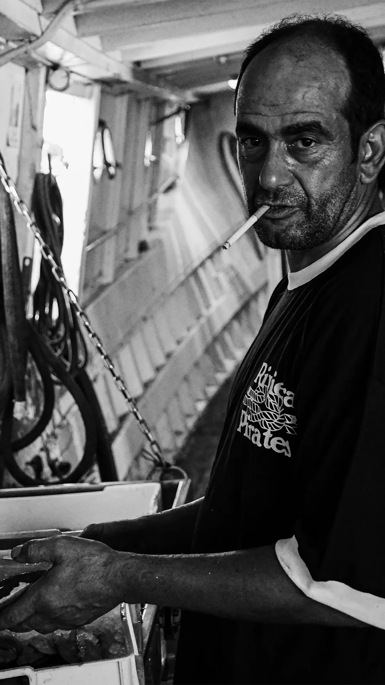
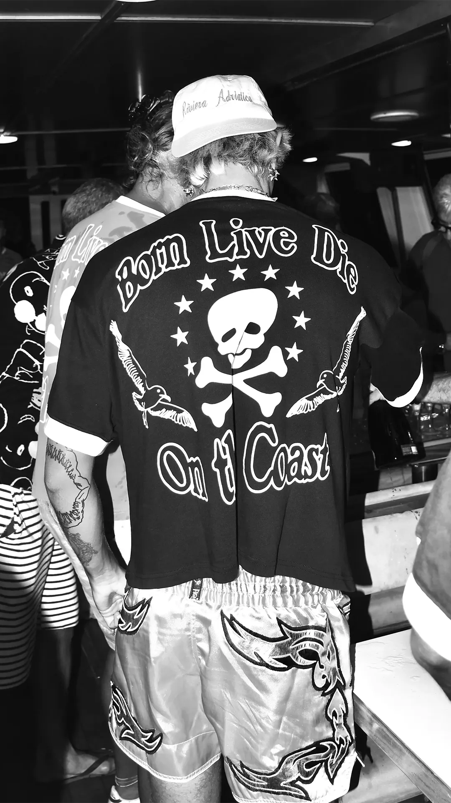

Visual identity
& art direction
00 — 24
01 — Selected profile
About
the practice.
Visual identity &
art direction
About me
My name is Filippo Pantaleoni, a visual designer from Rimini working under the name Tony Krueger since 2022. My practice moves across visual identity, editorial design and image-making, looking for a clear, deliberate balance between concept, atmosphere and form. I am interested in how a strong visual system can carry character without losing precision. Old horror cinema and subcultural imagery are recurring references, informing the mood of the work rather than defining its subject.
Core skills
- Visual identity & branding
- Editorial design & typography
- Art direction & image research
- Campaign systems & social assets
- Print, merchandise & layout
Tools
Adobe Photoshop
Adobe Illustrator
Adobe InDesign
Figma
Languages
Italian — Native
English — B2
Spanish — B2
German — B2
Selected practice
- Branding
- Identity systems, marks, art direction
- Editorial
- Type, layout, campaign and visual sequence
- Image
- Photography, postproduction and visual language
Contact
Let’s work together02 — Work showcase
Editorial
A focused showcase of typographic work, sequence and visual rhythm.
A selection of type, pacing and image direction, presented as one continuous piece of work.
Pause on a frame, take in the details, then return to the archive.
03 — Image system
Pictograms
A concise image system for music, events, objects and imagined releases.
Selected marks / open for application
Additional marks / archive


A small visual archive for music, events, objects and imagined releases. Selected marks open into their applied worlds.
04 — Campaign work
Posters
A collection of image-led experiments. Click a poster to view it without the noise.
05 — Riviera pirates
Branding
An identity that holds together at every scale: badge, wordmark, merchandise and image.
Riviera Pirates began at the beach establishment where I worked for several years, where the maritime world stopped being a backdrop and became a cast of characters.
My former managers soon became collaborators; bound by the same affection for the Riviera, we built an identity from salt, labour, summer nights and the people who make the coast what it is.






06 — Open for selected work